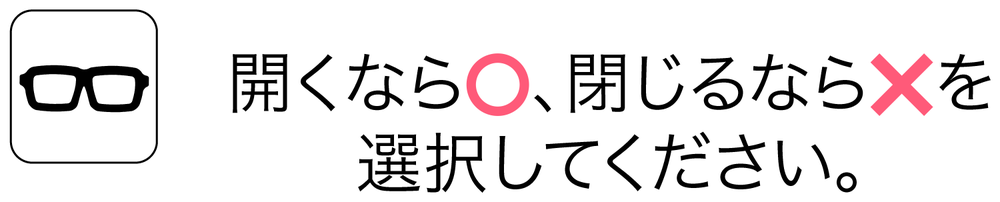
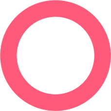

収容者の皆さまへ、必要な情報をお知らせします。項目を選択してください。
刑務所内では走らない。 手に赤い斜線の入ったマークがついているものには触れない。 何かあったらスタッフに伝えること。
ああああああああああああああああああああああああああああああああああああああああああああああああああああああああああああ


Question 0 ; 写真を撮る時に使うものは何？
全てひらがなで入力
情報を分析中......
分析結果はこちらです。必要なアイテムを取捨選択し、情報伝達に役立ててください。
(選択できたら、仲間にこの画面を見せて確認してもらおう)
間違い
インフォメーションページからこの端末での出来事を振り返ることができる。